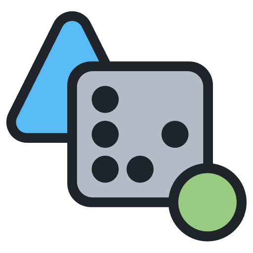
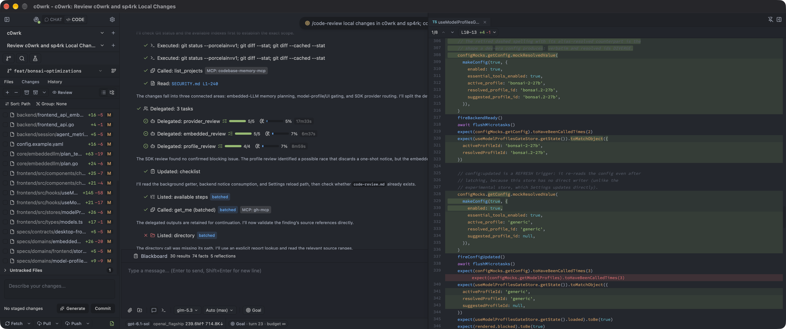
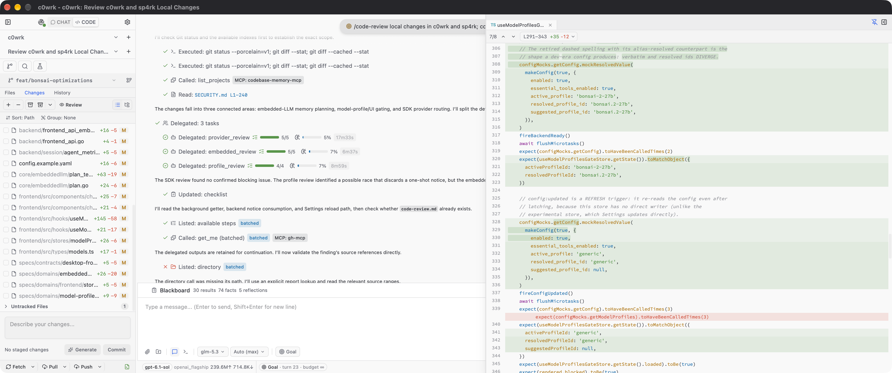

A plan you can review
Complex tasks become a graph of steps. Review the plan, then let isolated agents run independent steps in parallel.

c0wrk_For work that won’t fit in a single reply.
Research, code, and write — from the first plan
to a result you can verify.


Review the plan before work starts. Agree on what “done” means. Inspect the changes as they happen.
Complex tasks become a graph of steps. Review the plan, then let isolated agents run independent steps in parallel.
Goal mode keeps working and checking evidence against an agreed success criterion — until the goal is met, blocked, out of budget, or paused.
Result + evidenceApproved before work beginsReview real diffs, comment on files and hunks, and request revisions. Then stage, commit, and push — all in the same app.
+ verified change− switching between toolsIndependent steps can run in parallel. Work that depends on their findings waits for the results.
A real project with file editing, git, diffs, semantic search, and a dedicated terminal for each session.
An isolated scratch workspace for conversations and drafts, without git or code-modifying tools.
A research workspace with briefs, hypothesis graphs, progress metrics, and built-in skills, available in every project. Study Paper helps you understand and critically appraise papers, compare their evidence, and learn through explanations and flashcards.
Connect OpenAI- or Anthropic-compatible services. Local search models are included, so semantic search needs no extra model download.
Install and run the model from c0wrk. Runtime settings adapt to your available RAM, accelerator memory, and hardware compatibility.
The model and runtime are downloaded on installation. Available through Experimental Features; your machine must have enough memory.Choose which actions run automatically, need your approval, or stay blocked. Changes and command execution require confirmation by default.
Explore the safeguardsResume from checkpoints. Successful steps are reused on retry, and graceful shutdown preserves active work.
Connect through your organization’s proxy and trusted certificates. Project search respects the files you choose to exclude.
Several independent safeguards help you review consequential actions, protect your workspace, and keep the agent focused on your request.
File changes, commands, publishing, and connected tools ask for approval by default. You can permit routine actions or block whole categories. Blocked categories stay blocked in every autonomy mode.
Access is checked against your project, scratch space, and added work folders. Paths outside that scope are escalated for review. Links to files elsewhere are resolved before access is approved.
Command analysis flags secret-to-network flows, system writes, destructive actions outside the workspace, and downloaded code being executed. Commands it cannot assess are escalated too. Add your own blocked-command rules for stricter limits.
Files, webpages, attachments, and connected-tool responses are marked as untrusted data. The agent is instructed to treat embedded instructions as content, reducing the risk of a document redirecting your task.
Web requests have checks for private-network destinations and addresses that cannot be assessed. Provider connections verify certificates; self-hosted services can use a pinned server key, and corporate proxies can use your trusted certificates.
Repository hooks and command-running Git settings are neutralized by default. Commits that need hooks or signing wait for your decision. If you trust a repository, security-relevant configuration changes revoke that trust and prompt a fresh review.
Ask for an explanation before you approve. Optional assisted mode can approve clearly safe actions, reject dangerous ones, and return uncertain decisions to you. The most serious flagged actions still require your confirmation in interactive modes.
Step limits, token budgets, operation timeouts, and circuit breakers bound the work. Delegated agents receive scoped tools and budgets. Unattended operation is an explicit choice, with decisions recorded for review.
Updates and embedded-model downloads verify checksums before installation, and archive extraction checks for unsafe paths. Updates keep a rollback copy. Release builds are unsigned: checksums verify the published bytes, not the publisher’s identity.
ChatGPT sign-in credentials are stored in your operating system’s keychain. Long-term agent memory rejects common credential patterns, helping prevent accidental persistence of API keys and tokens.
c0wrk runs with your operating system account’s access. These safeguards control the agent’s actions; they do not provide an operating system sandbox. Unattended settings can change how approvals are resolved. Cloud models receive the context sent to your selected provider.
Choose your platform. Prebuilt archives and SHA256SUMS are available on GitHub Releases.
Apple Silicon · arm64
Get the macOS buildDownload and unzip c0wrk-desktop-macos-arm64.zip. Builds are unsigned: on first launch, right-click the app, choose Open, and confirm in the Gatekeeper dialog.
Full instructionsamd64 · arm64
Get the Linux buildsExtract the archive for your architecture and run ./c0wrk-desktop from its directory. Ubuntu/Debian requires libgtk-3-0 and libwebkit2gtk-4.1-0.
Full instructions64-bit · amd64
Get the Windows buildDownload and extract c0wrk-desktop-windows-amd64.zip, then run c0wrk-desktop.exe. Builds are unsigned: SmartScreen may ask you to choose More info, then Run anyway.
Full instructionsStable beta. You may encounter bugs, and features, APIs, and configuration formats can change between releases. On first launch, the app will guide you through setting up an LLM provider.
Found a bug or want to contribute?
Join the project on GitHub.